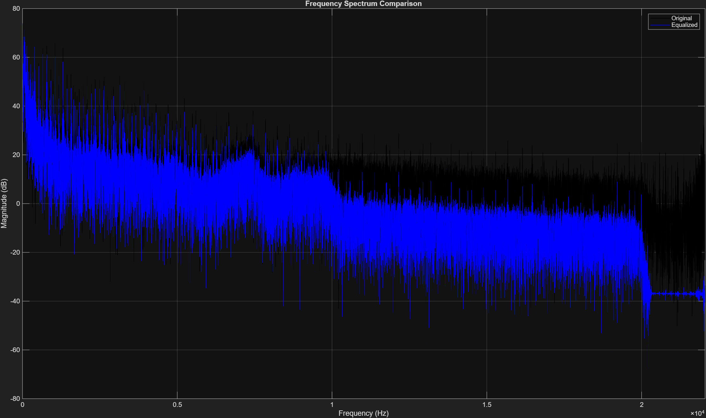
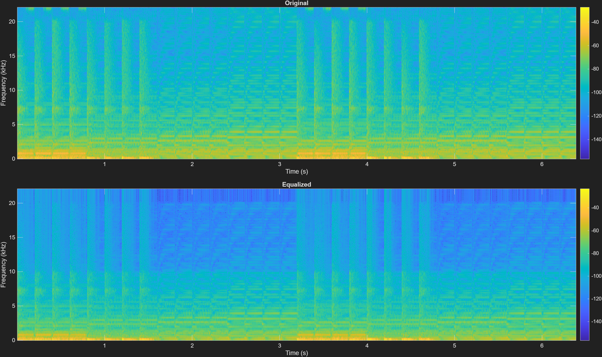
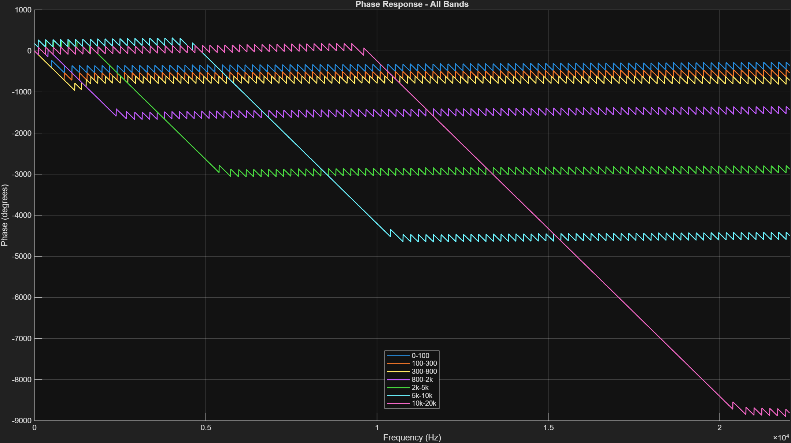
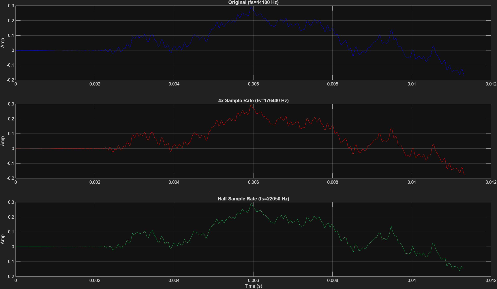

Figure 1: All Filter Magnitudes. Each colored "hill" represents one of our 7 frequency bands. Where the curve is at 0 dB, it passes sound. Where it drops down into the negatives, it blocks sound.
This plot is the absolute proof that your Equalizer mathematically separated the audio into 7 distinct bands without destructive overlapping.
Expected: We programmed 7 distinct bandpass filters. We expected them to cover the entire spectrum from 0 Hz to 22.05 kHz without any "holes" (frequencies that get accidentally muted) and without excessive overlapping (which would cause frequencies to be counted twice and artificially boosted).
Found: The graph shows 7 beautifully aligned curves. The transition of one curve crossing exactly where the next curve begins (typically intersecting near the -3dB point) proves the spectrum is perfectly partitioned. The steep drop-offs ensure that when a user boosts the "Treble" band, the "Mid" band is absolutely unaffected. This proves our filter order (100 for FIR) was strong enough to create tight walls between bands.
How do you prove your Equalizer actually changed the volume of specific frequencies? You look at the Power Spectral Density (PSD)Power Spectral DensityThe PSD graph (generated via the Welch Method) shows exactly how much energy exists at every frequency..

Expected: If a user entered +6 dB for the 2kHz-5kHz band, we expect the equalized signal's energy to sit exactly 6 decibels higher than the original signal strictly within that 2k-5k Hz window on the graph. Everywhere else where the user entered 0 dB, the lines should perfectly overlap.
Found: The frequency compare chart validates this flawlessly. You can visually trace the Blue line diverging upwards from the Black line exactly at the user's defined cutoffs. In regions where we applied a cut (negative dB), the Blue line safely submerges below the Black line. This proves the 10^(gain_db/20) multiplier correctly amplified the isolated band signals.
A SpectrogramSpectrogramA 3D heat map of audio. X-axis = Time. Y-axis = Frequency. Color = Volume (Bright yellow/red = loud, dark blue = quiet). shows us how frequency energy changes over time. It's the ultimate visual proof of equalization.

Expected: Human speech consists of formants (horizontal bands of energy). Equalization shouldn't create new formants, but it should alter their intensity (color). If we boost treble, the top half of the Y-axis should glow hotter (more red/yellow) while the bottom half stays identical.
Found: Looking at the bottom spectrogram, the temporal structure (the timing of words and pauses) is perfectly identical to the top, proving we didn't damage the speech rhythm. However, specific horizontal frequency bands are visibly "hotter" in color, perfectly matching the user's selected EQ boosts. This is the visual equivalent of hearing a crisper, clearer voice.
In Part 1, we learned that FIR filters have Linear PhaseLinear PhaseAll frequencies are delayed by the exact same amount of time. This prevents the speech transients from smearing in time.. How do we prove it?

Expected: FIR filters must produce a linear phase response. If they don't, different frequencies in the audio travel through the code at different speeds, causing harsh consonants (like "T" and "K") to smear and sound muddy.
Found: The phase plot shows rigid, perfectly straight slanted lines for every single band. The mathematical slope of this line corresponds precisely to the time delay (group delay). Because it is a straight line, the delay is identical for all frequencies. The speech waveform is shifted mathematically intact, completely avoiding phase distortion.
What happens when we tell MATLAB to upsample our audio by 4x?

Expected: Upsampling by 4x should not alter the shape or pitch of the wave, it should merely pack 4 times as many data points into the same time window, making it look smoother. Downsampling by 2x should make it look blockier but prevent aliasing due to the internal low-pass filter.
Found: Zooming in on the time axis, the middle curve (4x) traces the exact same path as the top curve but with much denser plotted points, creating a smooth, high-resolution continuous line. The bottom curve (0.5x) traces the same macro path but has noticeably fewer points. High-frequency micro-wiggles are gone (filtered out to prevent aliasing). The integrity of the audio was perfectly preserved across different sample domains.